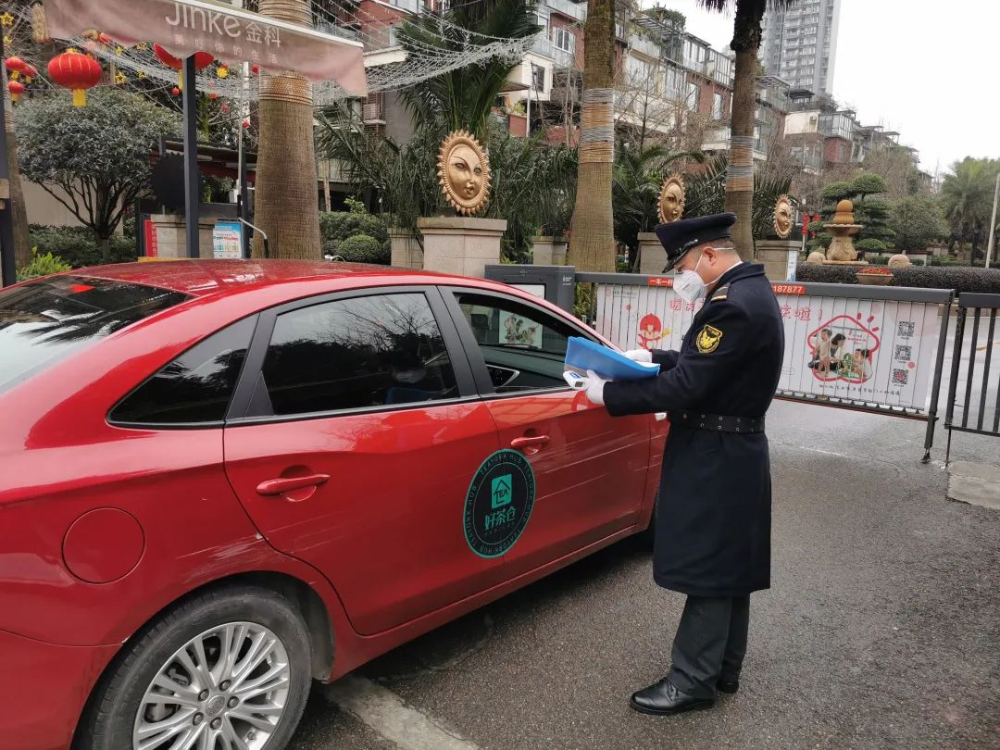

武汉疫情一级管控社区里的抗“疫”者：物业经理快30天没与家人见面了
原文链接 备份链接 正在“休市”中的华南海鲜市场。 记者：杨舒鸿吉 “ 疫情爆发至今51天，位于武汉市疫情一级防控区域的万科下属三个小区，正静待“拐点”到来。 ” 郑宗保说，他已经快30天没与妻儿见面了。这是他做物业经理13年来的头一次。 …

“

- 疫 情 之 下 -
如果没有按下全国的紧急暂停键，所有居民足不出户，所有像老陈这样的物业人员全力守护的最后一公里，也没有现在渐近的明朗和希望。
”
1
大年30那天中午，重庆渝北某小区的物业管家老陈在家和家人简单地吃了个团年饭后急匆匆地赶回了单位。虽然走得很匆忙，但临行前他还是把一副自己前些日子写的对联工工整整地贴在了自家大门上，边贴边念叨：“哎，前些年还有守门神画像可以和我的字作个伴，现在也不流行了，门神画都买不到了 。”
自武汉1月23日封城开始，老陈所负责管理的整个小区也随之开始实行整体的一套管控制度。作为一个拥有5800家住户的成熟小区，疫情在因春节返乡潮之际呈几何倍数递增的情况下，老陈是最直接、最频繁面对居住者的物业服务一线人员，也是所在小区疫情防控和一旦有事故发生最早的参与者。
回到单位那天下午，老陈组织全体物业一线管理人员立马召开了一个紧急会议。会议的主题只有一个：全体员工取消所有休假，24小时全面守住整个小区，直到疫情结束。
老陈今年43岁，作为一个退伍军人，早年的部队生活让他保持着非常好的体型和生活习惯。随时随地都是一身正装，着一双擦得锃亮的黑色皮鞋，配上他那张长着浓眉的国字脸，眼神凌厉，看上去非常专业，有一种让人信服的安全感。
已经干了十三年物业服务工作的老陈，来到这个小区做管家也4年有余了，但如今的情况还是第一次面对。他感觉自己心里没有底儿，可依然只能故作镇定地给同事们打着一针针的鸡血，谁也没有空去琢磨自己的安危。那时他还不知道，接下来自己将要面对怎样一段波涛汹涌的日子。

2
就在当天晚上，北京时间19:31分，正在楼栋例行检查工作的老陈手机微信群突然冒出来几十条信息。他赶紧打开一看，里面是一位业主录的一段视频，内容是一辆湖北籍小轿车在车库门岗处停着，驾驶员探出脑袋在和保安说话，大意是要求门岗放行。
视频在群里迅速炸开了锅。老陈愣了愣神，随即拿出对讲机吼道：“不能放行！等着我！我马上过去！”
原本要走10来分钟的路程，老陈5分钟就到了，这让戴着口罩的他有点胸闷。他到后发现车库门口已积压了不少等待进车库的业主车辆，喇叭声此起彼伏，但没有一个车主下车来。
“ 什么情况，这位先生。” 老陈隔着半米的位置探下了身子敲了敲关着的驾驶座窗户。
“蹬……” 的一声，窗户快速地放了下来，老陈看见一个40多岁没有戴口罩的中年男子，心里揪了一下。
“我是32栋xx业主家的亲戚，约定今日在他家团年，我们一家5个人刚从湖北开车回来，请放我们通行。” 这个男子用快速的语气说道。
“湖北、疫情、全家团年、没有口罩” 这几个关键词立马闪现在老陈的脑海里。那个时候，新冠肺炎正处于肆虐渗透的高点，虽然武汉封城才刚一日，但整个湖北省没有完全封闭，所以这辆湖北籍车辆是从下属的一个地级市出发，经宜昌进入重庆辖区巫山后一路赶到这里的。
“怎么办，没有明确的文件规定湖北车辆和人员不能进入，也不能带有色眼镜去对待湖北人。” 老陈脑子此刻飞快地运转。
“这样吧，您配合一下先别下车，我先通报一下我们物业总负责人和社区负责人，也马上通知业主下来。您把车先挪到边上，让后面的业主先进去。” 思考片刻，老陈一气呵成。
大概等了10来分钟，业主就出来配合核实了身份情况，老陈他们就把车放了进去。社区也来了电话让老陈告知，与行车人员有正面接触的业主一家必须全部在家封闭隔离14天。业主答应地很爽快。
“社区只是通过电话下达了要求，业主也是口头答应，并没有签署任何文件，如果业主不遵守怎么办？” 这是老陈在车辆走后想到的第一个问题。
而随之出现的 “小区其他业主我们该如何交待？我们该如何保障他们的安全？特别是和他们所处一栋楼的业主该怎么办？” 这些问题让老陈沉缓下来的心一下又提到了嗓子眼，他有些口干舌燥。
在这个住着两万多人的大型小区里面，如果真的有疫情发生，那后果真的不堪设想。
3
“不管了，先上门去查看查看，大不了我就守在那里。” 这是老陈琢磨后最初的解决方案，知己知彼，乃兵法上策。
这位业主家所在的32栋六楼（一户两层）是一栋没有电梯的花园洋房。老陈带着几个同事，做了一系列防护后敲开他家房门时发现，他们一大家人围坐在饭桌前，正在举杯对饮，庆祝新年的即将到来。
“来来来，陈经理，今晚辛苦你们了，进来喝一杯。” 看到老陈和同事的出现，业主笑着迎了上来。
“不用客气，我们就是上来看看，顺便嘱咐几句。” 老陈麻利地套上随身携带的鞋套，扯了扯身上的一次性雨衣，侧身进到屋里。他抬头快速地数了数人头，发现居然有17个人之多，不仅餐厅坐了一大桌人，客厅茶几也围坐着7、8个小孩。
“这家人胆子可真肥，这么多人聚在一起，无论如何也不能让他们再出去了。看来只能守着他们家大门了，不然真的没法交待。” 老陈一边暗自惊讶，一边在心里嘀咕道。
“我现在代表小区物业管委会和社区向你们正式传达一下，根据社区的要求，你们所有人需要全部在这里隔离14天后才能出来。我们随时会有人在门外执勤，24小时不间断，直到你们解除隔离。如果需要买任何东西，我们随时为你们服务。所以也请你们配合我们的工作，为了大家，也为了你们自己的安全。”
业主一家没有反对，表示接受。
或许他们早已做好了隔离的准备，又或许是怕自己带进门的湖北亲戚引起小区其他业主不满和群愤，集合起来把他们赶出小区。因为诸如此类的新闻这两天时有出现。
“既然在座的各位没有什么意见，那我们就先不打扰了。” 老陈使了使眼色走出门口，几个同事麻溜地跟了出来。
“这样你们先回去，今晚我先在这。” 老陈对同事们说。
“陈哥，你昨晚就是夜班，今天白天也没休息。你先去安抚一下群里其它业主的情绪，看看还有什么细节需要交待和完善的，今晚我先来。” 说话的是老陈的同事辜大哥。
“那行，我们也不说客气话，我去和物业总经理商量一下怎么协调安排这件事情，明日来换你，这12个小时拜托了。” 老陈也没和辜大哥客气，因为都是特殊情况，也因为他们是好兄弟。
“对了，一定站在门口楼梯的转角处，至少保持一米以上的距离，千万不能发生身体上的接触，随时记得带好口罩。” 老陈又补充了一嘴，快速地朝楼下走去。
当晚，老陈就和物业总经理商量，决定继续用这个所谓最笨也最直接的办法，24小时不间断守着这户业主的大门，直到隔离解除。同时，为保险起见，对小区所有的业主负责，他们决定第二日在业主大门口安装一个实时摄像头，以便存档备份记录。
也许是老陈他们反应很及时，业主们在收到物业发出的跟进及计划处理信息后，质疑声很快就消下去了。
等这些事儿都安排完后，老陈才瘫躺在椅子上长长地喘了一口气，短短几小时，他感觉有些天旋地转。
第二日一早老陈去换班时，看见门口放着一张简易的单人折叠床，一问才知道，原来是别的业主看见微信群消息后送来的。虽然他们有规定，上班执守期间只能站着，但老陈心里有一股暖流流过，那是一种无法言表的喜悦。其实远远不止一张单人床，后来还有业主主动送来了带靠背的凳子、电烤火炉子、水和食物等物资。
初五那天夜里，正好轮到老陈在业主家门口值班，可能是由于太累，半夜一点多他倚靠着墙壁的凳子睡着了，等三点多惊醒过来，他发现自己身上披着一床很轻的空调被。虽然没人主动来说，但他知道肯定是屋里好心的业主给自己披上的。
醒来后的老陈心里一直在琢磨，虽然那一家人在进行隔离，但他们毕竟一直处于一个不算宽敞的屋檐底下，多少都会有增加风险的可能性。是不是还有什么别的办法可以分散一下人员数量，帮业主规避一些风险?
他越想越觉得这一大家人在一起太危险了，强挨到早上8点，便立刻打电话与上级沟通。
随后，敲开了这户业主家的家门。
“大哥，是这样的，我们商量研究了一下，在小区东区的员工宿舍为你们单独腾出来了两间房，可以让湖北回来的五个人去那边进行隔离。这样你们的空间也宽裕一些，人少一些也安全一些。” 老陈把和上级商量后的解决方案快速地告诉了来开门的业主。
“ 这样，会不会很麻烦你们。” 业主听后，笑着用一只手挠了挠头。
“没事，您本来就是我们的业主，现在特殊情况特殊处理也是我们应该做的。” 老陈补充道，“不过在那边你们也依然不可以出来，我们随时随地可以为你们服务，那边门前就有摄像头，大家多多配合。”
说来也巧，没一会儿，收拾好正要搬家出门的这五个人刚要下楼道，就被突然出现在五楼楼梯处的一张大桌子挡住了去路。老陈抬头一看，是楼下的女业主和几个别栋的业主全副武装地站在桌子后面。
“你们不能放他们出去，我就是不放心，还特意留意着楼上，你看，我说对了吧！这才几天就待不住了。” 楼下的女业主嗔怪道。
“就是，就是，谁说不是呢？这不说一套做一套吗？” 她身边的几个人随即附和道。
“姐，你们听我说，我们不是要放他们离开，只是楼上家里人太多了，在一起隔离始终不算安全，我们才不得已给他们几个单独找了小区的住宿，让他们去那儿。”
“这也不行啊，他们这一走一路过的，万一留下病毒了可怎么办。” 大姐有些不依不饶了。
老陈有些无语，回头看了看身后跟着的几个人，随后有些无奈地说道：“这样吧，我们先回去，等到晚上半夜的时候，让他们再过去，我们把我们平时的装备给他们都准备上，等他们离开后，再整栋楼做二次消毒。”
“既然都这样说了，那就这样吧。希望你们说到做到。” 大姐脸上有些挂不住地说道。
就这样，业主家从湖北回来的那5个人在当天晚上11点暂时搬到了隔壁楼栋，老陈和3个同事轮岗24小时不间断守着，倒也没有什么异常。
在老陈不当值的时候，他还要负责为其他业主提供服务。他笑着形容自己白天就是个送菜的“田螺姑娘”，晚上变身成为守护家门的“门神”。
这种状态一直持续到正月十五那天，元宵节一早老陈就和同事对他们值守了14天的这个大型家庭做了解除隔离措施。他觉得那日的元宵节大家都特别开心，业主一个劲儿地对他和同事表示感谢。
老陈觉得，那句“谢谢”可真甜。

4.
老陈带着一种大战后胜利的喜悦过了一个元宵节，就在他觉得黎明快到时，重庆防控指挥部下达紧急通知，从2月9日开始，整个城市的各大街道小区开始实行全封闭式管理，以户为单位领取通行证，3天／1人次限时出行。
通知出来后，小区落地执行事宜的担子再一次落到了他和同事肩上。这次政府下达的指示对老陈来说是件好事，因为终于可以依据明文规定和准则去管理整个小区，这样操作起来更加地系统和专业。
虽然他们的日常工作并没有多大的改变，但他第一次感到自己成为了一个真正的参与者，成为了站在防疫第一线的战士。那种感觉让他有种回到了当年当兵的岁月，目的单纯而美好。
凭借之前的经验，无论是出门条发放领取还是每次车辆车次出行的例行检查，老陈都感觉没有一点压力。虽然现在处于半复工的状态，每天车辆进出有800人次之多，每次每人都要经过体温检测、盘查询问后才予以放行，但整个小区的业主都非常配合这一次的封闭式管理，没有爆发过一次冲突。
代业主买菜送货、取拿快递、每日上门为援鄂医护人员家庭做日常服务，这些也成为老陈每日工作中必备完成的事项。他说平均每天自己要送10多趟的货物，一天光在小区里都能走上20000多步。
看着疫情数据一天一天在走向低点，看着自己守护的这5800户人家平平安安，他觉得一点都不累，甚至恍惚间感到，虽然疫情来势凶猛，但自己的心有一种拖底的安全感。
其实老陈是心暖了。这期间，小区物业人员和业主之间的关系悄悄地产生一种质的变化。在以前，10天之内平均会有10几个投诉建议电话，现在整整快一个月时间了，虽然中间有些摩擦，但一个投诉都没有。而且很多热心的业主不记名地送来了几百个口罩和几十箱食物，虽然不足以扛大任，但也解燃眉，更加暖人心。
对于这次席卷全国、波及全世界的疫情来说，治疗一线肯定是在医院，但真正的防控一线也是在物业。如果没有按下全国的紧急暂停键，所有居民足不出户，所有像老陈这样的物业人员全力守护的最后一公里，也没有现在渐近的明朗和希望。
昨天夜里，重庆下了一场久违的雨，老陈说：“这种感觉就像历经了一场浩劫后的春雨，畅快淋漓。”
-END-
- 写 作 之 星 -
卓夕琳
/ 有时，你必须进入别人的世界，去发现自己的世界缺少什么。/
“我故”故事练习生培养计划，详情请戳：

About us
主编：鹿｜本期编辑：鹿
Contact us
投稿/商务合作/咨询
微信后台留言 or 邮箱：wmsygsdr@163.com
**我们是有故事的人｜华中科技大学出版社官方故事平台**
原文链接 备份链接 正在“休市”中的华南海鲜市场。 记者：杨舒鸿吉 “ 疫情爆发至今51天，位于武汉市疫情一级防控区域的万科下属三个小区，正静待“拐点”到来。 ” 郑宗保说，他已经快30天没与妻儿见面了。这是他做物业经理13年来的头一次。 …
原文链接 备份链接 记者：傅林林 “ 小区物业管理受到最严峻考验。 ” 2020年的春节因为疫情而显得格外特殊，足不出户和口罩成了标配，抖音里到处都是在家里旅游的段子。但对于各个社区来说，物业从业者却要比任何时候都繁忙。 随着疫情的扩散， …
原文链接 备份链接 受疫情影响，今年春节很多人没有办法回到家乡，只能独自留在工作的城市中。今天的来信者就是其中一位，疫情爆发之后她一直独自留在北京。往日的正常生活仍然没有露出回归的迹象，只有一场暴雪如期而至。 真正要生活的人必然得是坚韧 …
原文链接 备份链接 应该做一个自私的人，还是坚持自己：做一个对社会有用的人？ 口述 | 高 集 整理 | 沈 林 今天是我自愿隔离在家的第14天，按理说，我已经可以正常出门了。但是最近发生的事，让我的心情很复杂。 我叫高集，20多岁的时 …
原文链接 备份链接 采访、撰文 | 吴楠 投稿邮箱 | gayspot_edit@163.com 马志远是2020年年初这一次来势汹汹的新冠肺炎疫情中的一名默默无闻的志愿者。虽然在远离疫区中心的地方，但他看着这个城市街头的人流量只有原来的 …